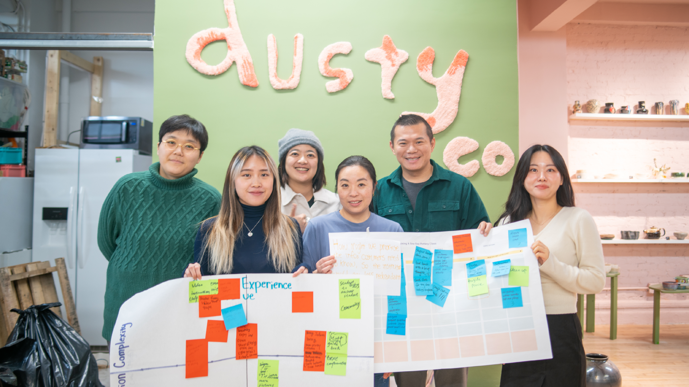
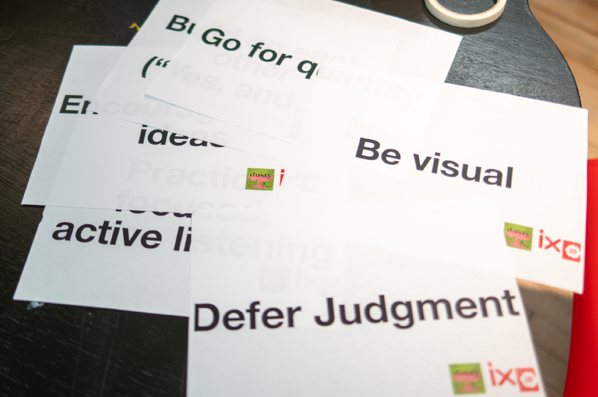
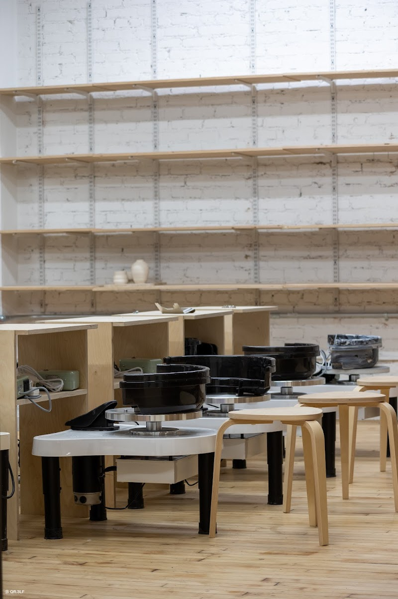
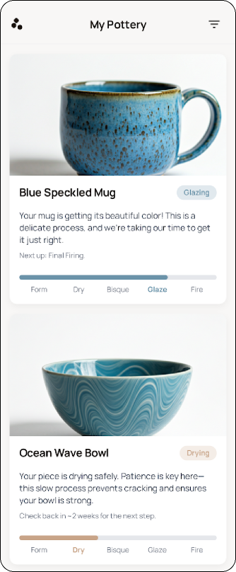
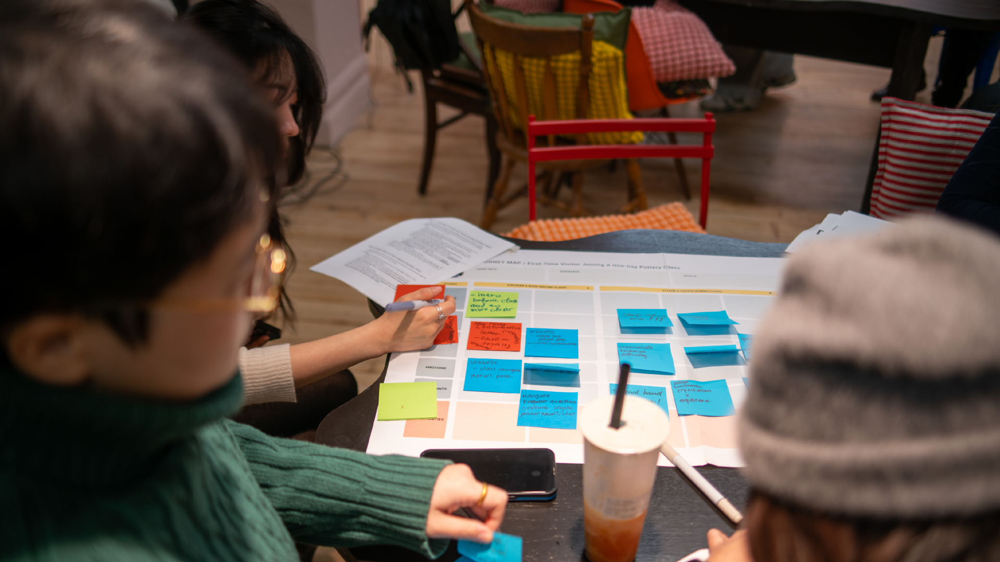
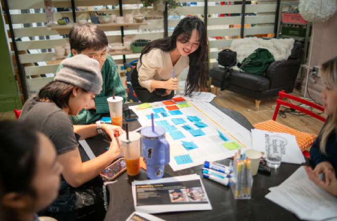
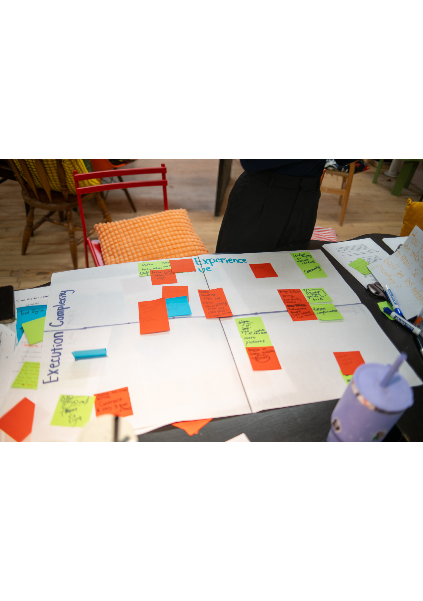
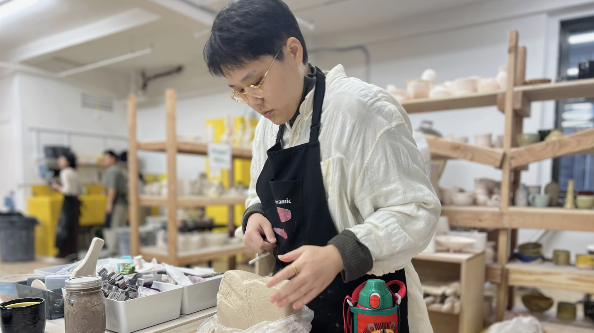
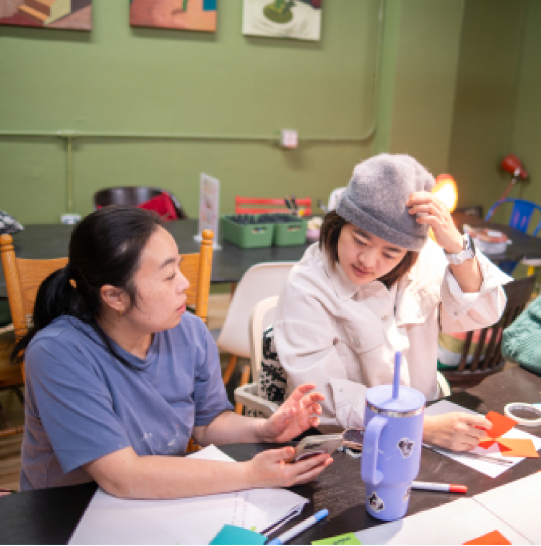
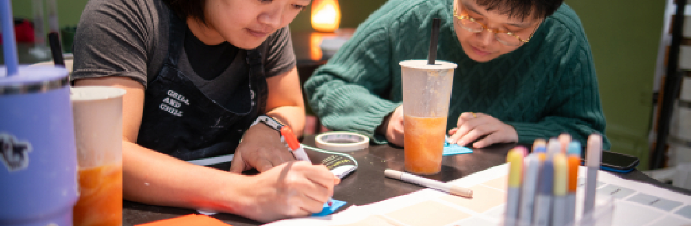

Service Design for Dusty & Co. Pottery Studio
SVA MFA IxD | Fall 2025 | The Familiarity Paradox

A service design project uncovering why newcomers felt lost in a space designed to feel like home — and how to fix it without losing the soul.
Role: Service Designer — Research, workshop facilitation, insight synthesis
Client: Dusty & Co. — Independent pottery studio, NoMad, Manhattan
Team: Gordon Cheng, Seren, Feifey
Duration: 8 weeks (Fall 2025)
Methods: Interviews, Shadowing, Affinity Mapping, Co-design Workshop
Discovered "The Familiarity Paradox" — the founders' deep familiarity with their space led them to remove the very guidance newcomers needed most.
Delivered three actionable interventions under a new design principle: "Soft Clarity."
"I assume you already know something. So that's why I don't give you the clarity instruction. That's the whole point."
Dusty & Co. is a community-driven ceramics studio in NoMad, Manhattan. It's not a tourist pottery-painting spot, and it's not a serious art school. It wants to be a "third space" — a warm, non-commercial creative community for corporate professionals seeking relaxation and social connection.
The founders deliberately keep the space rough, relaxed, and personal — "like a friend's house."
But the data told a different story.
No digital confirmation, no physical wayfinding, confusion after arrival.
3-4 week firing period with almost no updates. Customers call repeatedly, creating anxiety and operational burden.
TikTok makes pottery look easy and fast. Reality: difficult and slow. The Difficulty Gap, Result Gap, and Time Gap.
Low Structure
Trust · Intimacy
"Like a friend's house"
Needs Guidance
Confusion · Exclusion
"I don't know the rules"
The studio is designing for "Insiders" but selling to "Outsiders."
"Cuz your perspective is really commercialized, but we want to be more... like a friend coming here to have fun."
Through a co-design workshop with the founders and staff, we aligned on a new design principle:
"Soft Clarity"
Provide structure through human connection and engaging media — not bureaucratic rules.

A beautifully designed physical card presented at check-in. Not a legal contract — an emotional contract.
Sets expectations about difficulty, time, and the nature of handmade pottery. Reframes "failure" as part of the creative process.

Short, aesthetic video loops sent via confirmation email/SMS, hosted on Instagram:
"How To Find Us" — wayfinding before arrival
"The 4-Week Journey of Clay" — what to expect about firing

QR code landing page with human-centric language instead of generic status updates:
"Your piece is drying safely. This takes time to prevent cracking. Check back in 2 weeks."
7 stakeholder interviews (founders, instructor, front desk, customers) + end-to-end shadowing from booking to ceramic pickup.
Affinity mapping and journey mapping. Identified 3 key friction zones: Invisible Onboarding, Black Box of Waiting, Expectation Mismatch.
2-hour session with founders + staff. HMW questions, Crazy 8s rapid ideation, Value vs. Complexity prioritization matrix.
3 phased interventions following "Soft Clarity" principle, delivered with implementation roadmap and brand-aligned design contract.

Co-design workshop at Dusty & Co.

Crazy 8s rapid ideation session

Value vs. Complexity prioritization
"Everyone has a very low tolerance for frustration... because they didn't know beforehand that this thing is so difficult."



"Start with the conflict, not the process" — Presenting the Familiarity Paradox as a narrative hook made the founders immediately receptive, even though findings challenged their assumptions.
Co-design as alignment tool — The workshop shifted the founders from defensive to collaborative.
"Invisible" interventions — Digital and emotional solutions that enhance experience without cluttering the physical space.
Dusty & Co.'s non-commercial vibe is genuine and rare. The real design challenge was adding clarity while protecting the soul of the place.
Service design isn't about adding systems — it's about making the invisible visible, gently.